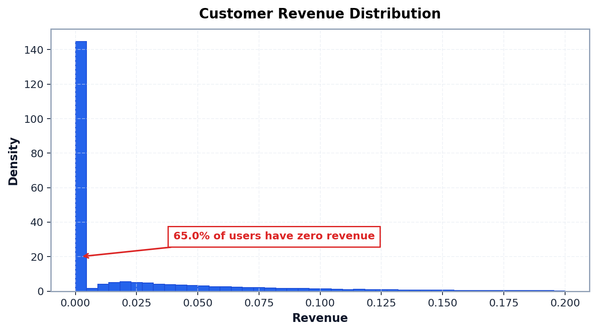
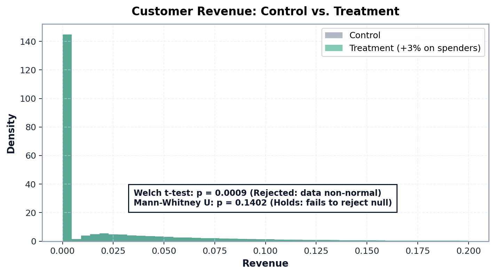
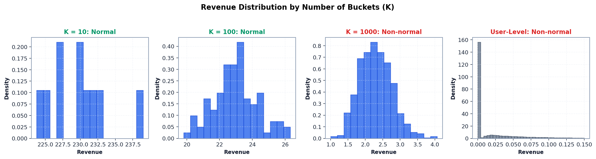
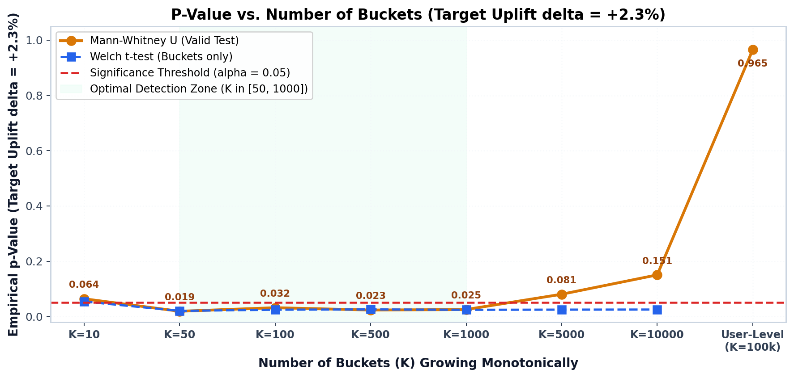
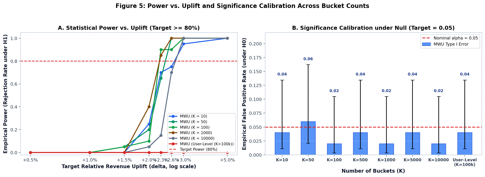

| Aggregation Level | K | Normality Status | MWU FPR (α=0.05) [95% CI] | Single-run p (δ=+2.3%) | Estimated MDE (Power=80%) |
|---|---|---|---|---|---|
| 10 Buckets | 10 | Holds | 0.040 [0.011, 0.135] | 0.0640 (Rejected) | +2.70% |
| 50 Buckets | 50 | Holds | 0.060 [0.021, 0.162] | 0.0189 (Holds) | +2.50% |
| 100 Buckets | 100 | Rejected | 0.020 [0.004, 0.105] | 0.0318 (Holds) | +2.26% (Optimal) |
| 500 Buckets | 500 | Rejected | 0.040 [0.011, 0.135] | 0.0233 (Holds) | +2.45% |
| 1000 Buckets | 1000 | Rejected | 0.020 [0.004, 0.105] | 0.0252 (Holds) | +2.27% (Optimal) |
| 5000 Buckets | 5000 | Rejected | 0.040 [0.011, 0.135] | 0.0805 (Rejected) | +2.85% |
| 10000 Buckets | 10000 | Rejected | 0.020 [0.004, 0.105] | 0.1505 (Rejected) | +2.73% |
| User-Level (Raw) | 100000 | Rejected | 0.040 [0.011, 0.135] | 0.9652 (Rejected) | > +5.00% |